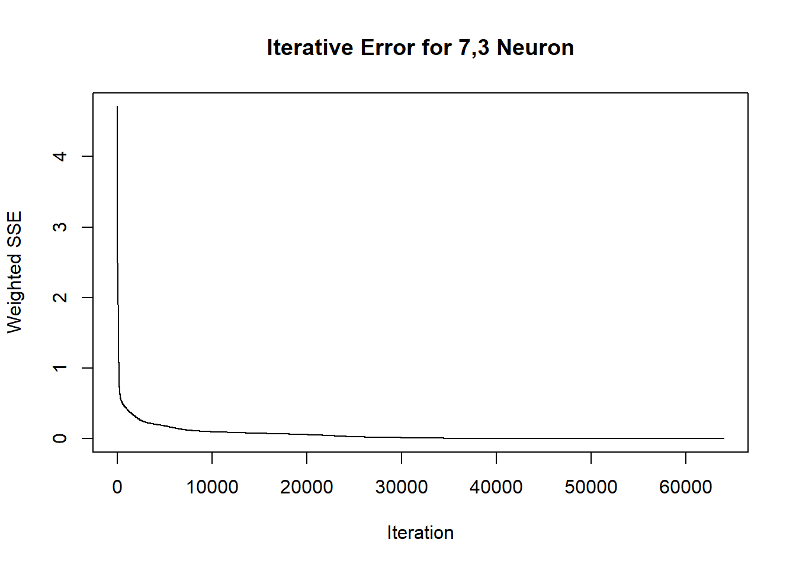
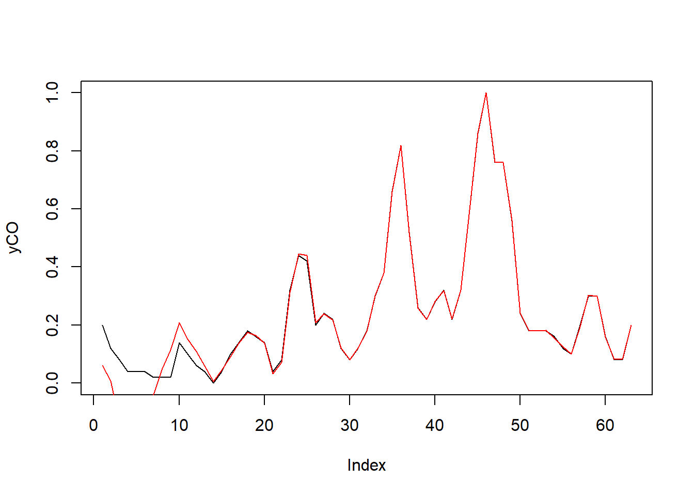
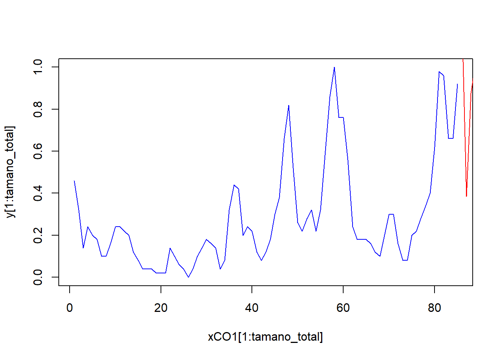

Chapter 8 MODELO ELMAN
y <- as.zoo(S)
x1 <- Lag(y, k = 1)
x2 <- Lag(y, k = 2)
x3 <- Lag(y, k = 3)
x4 <- Lag(y, k = 4)
x5 <- Lag(y, k = 5)
x6 <- Lag(y, k = 6)
x7 <- Lag(y, k = 7)
x8 <- Lag(y, k = 8)
x9 <- Lag(y, k = 9)
x10 <- Lag(y, k = 10)
x11 <- Lag(y, k = 11)
x12 <- Lag(y, k = 12)
slogN <- cbind(y,x1,x2,x3,x4,x5,x6,x7,x8,x9,x10,x11,x12)set.seed(42)
fitCO <- fitCO<-elman(inputs[trainCO],outputs[trainCO],size=c(7,3),learnFuncParams=c(0.1),maxit=64000)
yCO <- as.vector(outputs[-testCO])
plot(yCO,type="l")
predCO <- predict(fitCO, inputs[-testCO])
lines(predCO,col = "red")
## [,1]
## abr. 2018 1.2370917
## may. 2018 0.3854758
## jun. 2018 0.8756572
## jul. 2018 1.0315460
## ago. 2018 0.5400333
## sept. 2018 -1.4342892
## oct. 2018 -2.6180711
## nov. 2018 -2.2094759
## dic. 2018 0.6119263
## ene. 2019 1.2809172xCO1 <- 1:(tamano_total+length(mod5CO))
yCO1 <- c(as.vector(Z),mod5CO)
plot(xCO1[1:tamano_total], y[1:tamano_total],col = "blue", type="l")
lines( xCO1[(tamano_total):length(xCO1)], yCO1[(tamano_total):length(xCO1)], col="red")